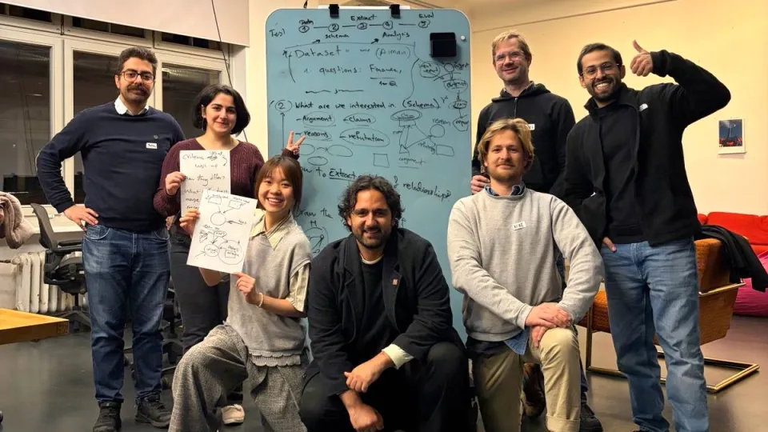

AI-driven
autonomous research
research loops, in silico
AI for HEOR Colloquium
Kazik Pogoda
Xemantic / Foresight Institute / Claude Ambassador for Science
email
research loops, in silico
AI for HEOR Colloquium
Kazik Pogoda
Xemantic / Foresight Institute / Claude Ambassador for Science
email
the goal has to be something the machine can check by itself
the state lives in files, not in the memory of the model
research done entirely in computation — after in vivo and in vitro
this is where research can be autonomous today
you already know these rules
a loop that can say “not enough evidence” is a loop you can trust
the agent calls itself
the same loop at every level, each branch with a fresh context — and Honest Annie can rewrite its own harness too
AI for Science · 7 November 2026
with Foresight Institute

negative results are results
we could not answer it for biology — the scientists could
a problem fits a loop when its answer can be checked by computation